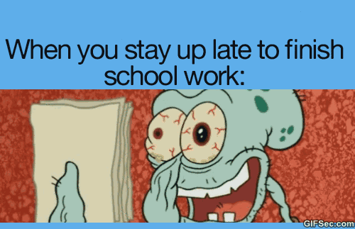

Over mij
hier onder een stukje info kwa opleidingen, ervaringen en hobbies
Opleidingen
- 2003- 2011 Basisschool Het Schateiland / Kanaleiland
- 2011- 2013 Anna van Rijn College Nieuwegein ( middelbareschool
- 2013- 2015 MBO Amersfoort Matthijsvermeulen straat Opleiding Zorg en
Welzijn ( afgerond)
- 2016- 2019 ICT Applicatie Ontwikkelaar niveau 4 Gorinchem Da Vinci college

Werk Ervaringen
- 2011- 2012 Stage/werk footlocker Utrecht Steenweg
- 2012- 2013 Stage La Place Hoogchatrijne Utrecht
- 2015 mei- 2015 juli Verkoopmedewerker WE Belgie/ Temse
- 2015 dec - 2016 feb Horecamedewerker, Holiday in London Heathrow
Hobbies & Persoonlijk
Ik ben een sportief type die veel heeft gevoetbald, als kind hebben mijn ouders mij op een voetbal club gezet waar ik jaren intensief heb gevoetbald. Tegenwoordig doe ik wat minder aan sport vanwege het drukke bezig zijn met mijn studie. Ik heb veel gereisd in mijn leven. Ik Ben zowel in London als in Belgie werkzaam en woonachtig geweest. Ik sta altijd open voor nieuwe ervaringen, Ik hou van kennis opdoen en sociaal contact maken, met mensen met zelfde belang stellingen. Veder ben ik zelf een sociaal type Ik spreek vloeiend Engels en Nederlands. en ben opzoek naar een leuke baan. Ik wil graag een toevoeging zijn voor het team.